俄罗斯境内俄制飞机体验全指南 ver.2026
笔者从22年至今多次深入俄罗斯探寻能体验的俄制飞机，姑且也算是有些心得，在如今全球不稳定局势大背景之下，俄制飞机在俄罗斯（但是基本不在其他独联体国家）被迫从机库里面翻了出来，擦了擦灰，挽起袖子，隐约带着苏联时期的气味就上场了。
本文参考的排班表均为2026年3月-10月航季，后续我会一直更新
写在前面
俄罗斯旅行Tips：
- 🏦：俄罗斯依旧没有接入swift，需要俄罗斯本地的银行卡才能支付，并且生活的每一个地方都可能会用到银行卡，很重要。如果你比较急，可以在https://yoomoney.ru/ 这里申请一张卡邮寄到国内即可；一个更好的选择是到了俄罗斯之后第一天跑一趟当地的银行，带上护照10分钟就能办一张卡，而且还好看、免费，推荐T-bank，几乎不锁卡（不像某个绿绿的银行天天锁我卡）。
- 💰：卢布需要在国内换好带过去，并不是很好换，在中国银行可以换（限额很少），多一点的话可以去工商银行换（但是仅限部分地区，我一般在哈尔滨换）。
- ：俄罗斯手机卡可以直接在淘宝买，算是半个灰产，因为俄罗斯手机号都需要生物识别认证，挺麻烦的（如果你想办自己的手机卡，参见后记）
- 🚴：俄罗斯除了莫斯科和圣彼得堡，其他地方公共交通挺烂的，推荐打车，使用YandexGo这个软件就行，里面可以选择现金支付，当然你可以绑定你自己的俄罗斯银行卡。
- ✈️：买机票、酒店也需要卢布支付，如果你看中了想订的，有些可以携程直接买，有的只能在航司官网用俄罗斯银行卡支付，后者对于国内的各位可以使用淘宝找个靠谱的俄罗斯代购帮你支付就行。
- 💬：俄罗斯本地大部分人都不会说英语，部分年轻人能说一点，也有一小部分会说中文，请务必学一些日常俄语方便交流。
- 🏠：俄罗斯有户籍管理制度，落地俄罗斯7天之内需要办理“居住地登记”（俗称“落地签”），一般给酒店前台说一声就可以办，2025年之后办理需要花钱。如果没有这个登记会被罚款。
- 🛃：入境给的小白条千万保管好，这是你在俄罗斯的身份证明，各个地方都会用到。
- 💻：莫斯科等地区由于战争导致经常断网，非常建议手机下载离线地图。
对于航空爱好者的额外Tips：
- 俄罗斯比较敏感，拍飞机很容易被抓进去⚠️然后被黑条子讹诈几万卢布（亲身经历），建议学好俄语方便沟通，本人亲测可以降低被抓进去的概率，可以沟通解决。
- 机场的流程和国内乃至全球基本是一致的，值机-安检-候机-登机。
- 如果你想保留登机牌，有两种方法：一个是值机之后自己手机领一个电子登机牌，一般是航司官网领取；另一个是假装登机牌掉了再去打印一张用来登机。
- 俄罗斯廉价航空真的比春秋航空离谱，注意行李箱尺寸！
- 俄罗斯航班部分没有IATA代码，使用的是西里尔字母，注意小心区分西里尔字母和英语字母的“形近字”。
- 俄罗斯几乎所有的机场都有真飞机纪念碑，一般放在航站楼门口，可以打卡拍摄。
俄罗斯旅游（大概）必备的APP
社交软件
WhatsApp（目前已禁用），VK，Telegram（目前已禁用），MAX（俄罗斯官方推荐，但是软件有后门，嗯懂的都懂），Meta系软件（脸书等等）
生活软件
Yandex Go（打车、电动滑板车、外卖），Yandex Map（地图），银行App（需要到俄罗斯当地下载），超市App（比如5分超市之类的），运营商App（MTS、beeline、Megafon之类的）
如何注册属于自己的俄罗斯手机号（非淘宝购买）
- 带上护照，在俄罗斯本地找一家护照翻译公证（中国国内公证是不行的），一般一天搞定（注意俄罗斯人很马虎，我第一次翻译没自己核对发现给我出生日期写成2023了）
- 带着护照原件、翻译公证件，前往面向外国人服务的政务中心（目前很少，请参阅小红书），注册并激活Gosuslugi账号。
- 带着你的账号、护照、翻译公证件，前往一个方便的银行，办一张卡并且进行生物识别认证（仅能在银行办理），生物识别具体就是用俄语念数字还有人脸信息之类的。
- 等个一两天信息录入之后，就可以去营业厅（推荐MTS），给店员展示你的Gosuslugi里面的生物识别信息就可以办理手机号了。
正文！
星级说明：每种飞机对应的每个航司我都会给出一个评分表，从1-5颗🌟，具体考虑如下：
- 乘坐体验：客舱卫生、餐食口味、地面服务等
- 排班密度：每周排班数量
- 性价比：价格除以航程
- 稳定程度：购买该航班的换机可能性（越容易被换机评分越低）
让我们开始这一趟俄制航空旅程吧（每个航司的每个航班暂且只推荐一个，后续更新全部）：
雅科夫列夫Як-40（Yak-40）
- 雅克-40（北约代号：Codling ， 意为 “ 小鳕鱼” ），属于支线客机，研发于20世纪60年代。
- 虽然是三发尾吊布局，但是机身仅20米长，座位也少得可怜（超级紧凑能塞40人，正常也就20-30人），由于动力强劲因此起落性能超级好。
- 采用梯形机翼，牺牲了巡航速度（大约只有550km/h），换取了更好的起落性能。
沃洛格达航空公司（Vologda Air Company / VGV）
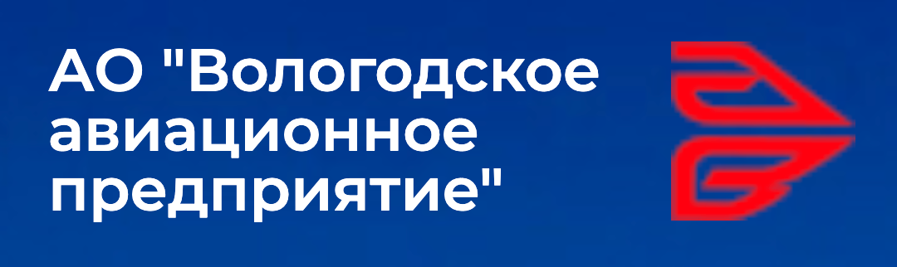
购票平台：俄罗斯本地OTA、航司官网
这个航司的雅克40个人体验还是不错的，由于巡航速度不快，飞的很稳，但是受气流影响也比较大，毕竟坐着四十多岁的飞机还是很提心吊胆的。内饰比较老旧，座椅很窄，航司采用了最紧凑的配置。登机走机尾上飞机，这也是尾吊三发的特色了，闻着航油味道捂着耳朵前行。飞机餐只有一颗糖和一杯茶水，穷酸的可怜。
还有一点很有意思，这个航司在疯狂翻新雅克40，可以飞的飞机比当时多好几架了，2023年那会就一个88188能飞。
| 乘坐体验 | 排班密度 | 性价比 | 稳定程度 |
|---|---|---|---|
| 🌟🌟🌟 | 🌟🌟🌟🌟 | 🌟🌟🌟🌟 | 🌟🌟🌟🌟🌟 |

由雅克40值飞的航班：
- VG-2389/2390 莫斯科VKO-沃洛格达
 - VG-612/613 圣彼得堡-沃洛格达
- VG-612/613 圣彼得堡-沃洛格达
 - VG-561/562 大乌斯秋格-沃洛
- VG-561/562 大乌斯秋格-沃洛
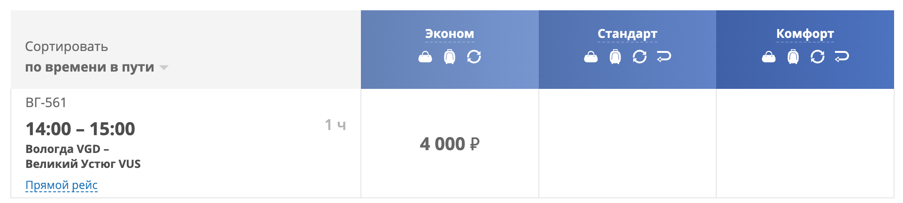
堪察加彼得罗巴甫洛夫斯克航空（Petropavlovsk-Kamchatski Airline / PTK）
购票平台：航司官网
这个航司我预计会在今年体验，据朋友称体验不错，客舱较新。该航司目前存活雅克40较少，并且均为和其他飞机混飞，鉴于堪察加半岛较为遥远，而且机票死贵，如果专门为了体验雅克40不建议前往。
| 乘坐体验 | 排班密度 | 性价比 | 稳定程度 |
|---|---|---|---|
| 🌟🌟🌟 | 🌟🌟🌟 | 🌟 | 🌟🌟 |
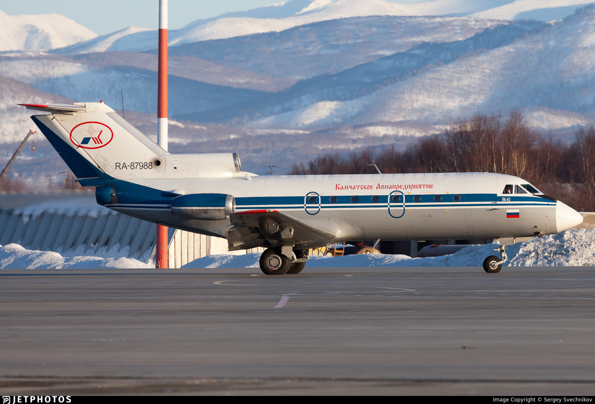
由雅克40值飞的航班：
- DE251/252 彼得罗巴甫洛夫斯克-ПАЛАНА（和An-26混飞）
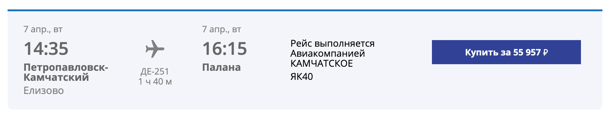
- DE123/124 彼得罗巴甫洛夫斯克-ОССОРА（和An-26混飞）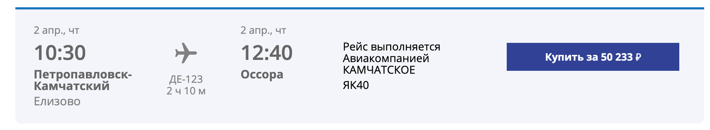
雅科夫列夫Як-42（Yak-42）
- 雅克-42（北约代号：Clobber，意为“破布”），属于中短程客机，研发于20世纪70年代。
- 同样是三发尾吊布局，机身长达36米，载客量可达100-120人，是雅克-40的放大后掠翼版本。
- 采用后掠翼设计，巡航速度提升到了810km/h，相比雅克-40有显著提升。
克拉斯航空（KrasAvia / KV）
购票平台：俄罗斯本地OTA、航司官网
克拉斯航空是目前极少数还能体验到雅克-42的航司。作为稍大一点的区域客机，雅克-42的客舱空间比雅克-40宽敞许多，可惜克拉斯航空选择了拥挤的3-3全经济舱配置，不过Yak-42D依旧保留了标志性的尾部登机自带客梯。同样是尾吊三发，后排的噪音依旧“硬核”。由于飞机年龄较老（30+），乘坐体验带着浓厚的苏联复古气息。

| 乘坐体验 | 排班密度 | 性价比 | 稳定程度 |
|---|---|---|---|
| 🌟🌟🌟🌟 | 🌟🌟🌟 | 🌟🌟 | 🌟🌟🌟 |
由雅克42值飞的航班：
- KV177/178 克拉斯诺亚尔斯克-伊加尔卡
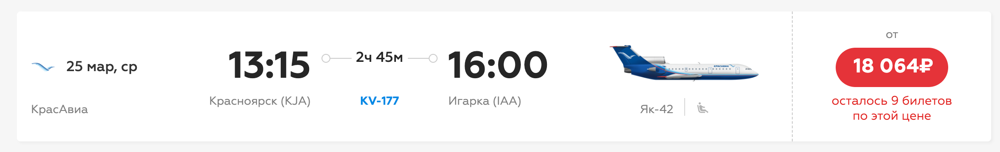
- KV107/108 克拉斯诺亚尔斯克-戈尔诺阿尔泰斯克（部分季节有） - 克拉斯航空的其他航班都有较低可能换成Yak-42，取决于客流量。易兹哈维亚航空（伊热夫斯克航空 Izhavia / I8）
购票平台：国际OTA（携程等），Богородское
这是我一开始打算体验Yak-42的开端，我在油管上刷到过这个航司的体验视频，后来因为各种计划打乱了。
我也打算今年体验一下，应该是这个航司最后一架能飞的Yak-42了（RA-42401），只飞两条航线。
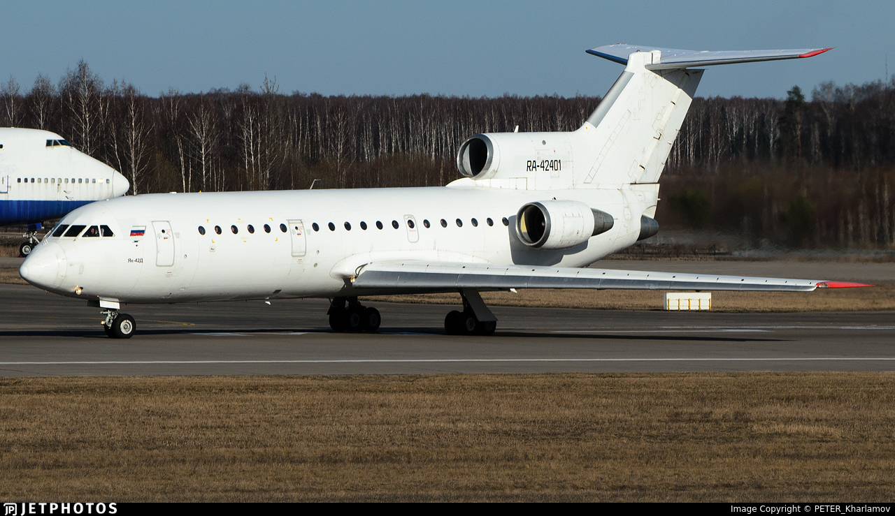
| 乘坐体验 | 排班密度 | 性价比 | 稳定程度 |
|---|---|---|---|
| 🌟🌟🌟🌟 | 🌟 | 🌟🌟🌟🌟🌟 | 🌟🌟 |
由雅克42值飞的航班：
- I8305/306 伊热夫斯克-莫斯科DME
 - I8201 伊热夫斯克-叶卡捷琳堡
- I8201 伊热夫斯克-叶卡捷琳堡

安东诺夫Ан-24/Ан-26（An-24/26）
这两种飞机体验几乎一致，而且很多航司也喜欢用这俩混着飞，因此我放到一起编写，并且由于值飞航线太多，此处只标记An-24/26经常出没的城市，以便各位自行搜索
- 安-24（北约代号：Coke，意为“焦炭”）和安-26（北约代号：Curl，意为“卷发”）是苏联时期广泛使用的双发涡桨支线客机/货机，起降性能极佳，非常适合西伯利亚和远东等基础设施较差的高寒地区。
- 客舱环境以今天的标准来看算得上是“噪音之源”，涡桨发动机的狂野轰鸣是其最大的特色。
- 两者的主要区别在于安-26有尾部货舱跳板（多用于客货混装），而安-24是纯客机布局。
哈巴罗夫斯克航空（Khabarovsk Airlines）
购票平台：俄罗斯本地OTA，航司官网
在远东地区非常活跃的航司，票价相对稳定但排班随季节变化较大（大部分小航司都这样）。可以在哈巴罗夫斯克（伯力）体验到。他家除了An-24还有一批L-410，维护水平差强人意。
| 乘坐体验 | 排班密度 | 性价比 | 稳定程度 |
|---|---|---|---|
| 🌟🌟🌟 | 🌟🌟🌟🌟 | 🌟🌟🌟 | 🌟🌟🌟🌟 |
An-24/26活跃的地区：
- 伯力（哈巴罗夫斯克）
- 庙街（尼古拉耶夫斯克）
- Bogorodskoye（Богородское）（注意这个是外东北的一个小农村）
- 鄂霍茨克
哈巴罗夫斯克航空3-10月排班表:
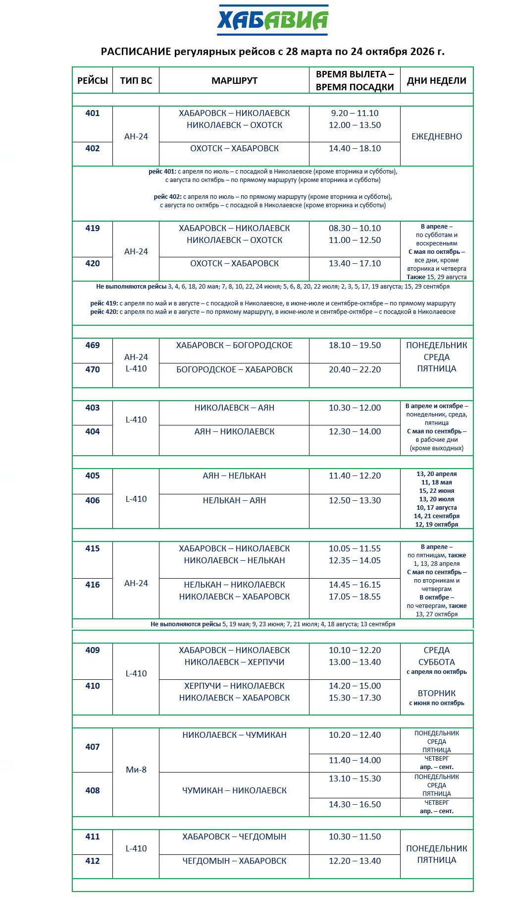
极地航空（Polar Airlines）
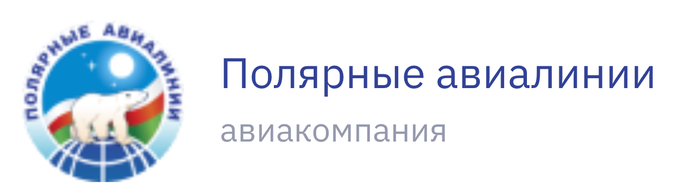
购票平台：俄罗斯本地OTA，航司官网首页
大本营在雅库茨克，涂装带着浓浓的极圈风情（并非，好多白飞机涂个logo就上来了）。机队老旧但维护还算不错，主要串联萨哈共和国（雅库特）的各个偏远定居点，如果想体验雅库特深度游的话可以尝试一下。
| 乘坐体验 | 排班密度 | 性价比 | 稳定程度 |
|---|---|---|---|
| 🌟🌟 | 🌟🌟🌟🌟 | 🌟🌟 | 🌟🌟🌟 |
An-24/26活跃的地区：
该航司所有航线均为An-24/26以及Dash8-Q300混飞，活跃地区为该航司的所有航点，详见下表3-10月排班：
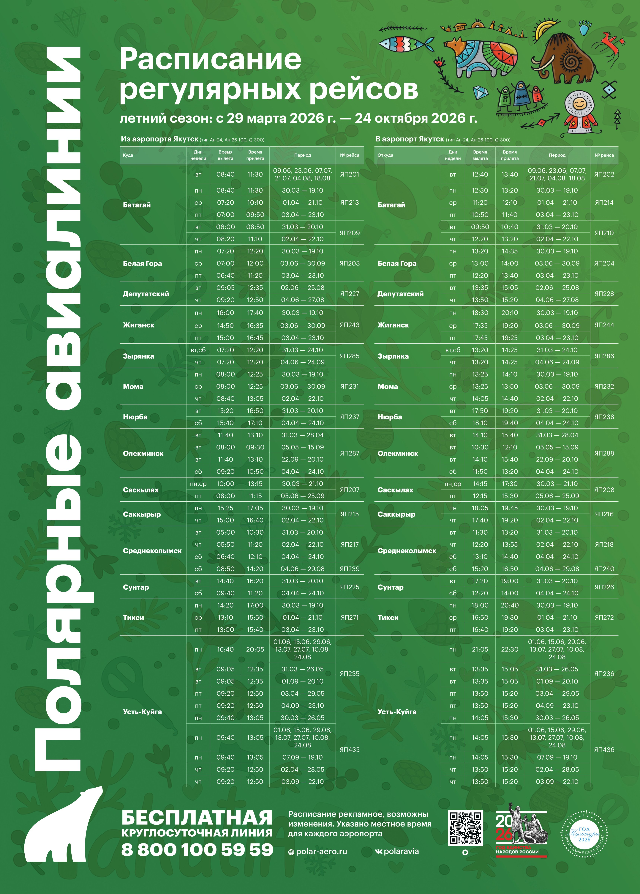
埃罗莎矿业航空（Alrosa Airlines）

购票平台：俄罗斯本地OTA，航司官网
背靠大钻石矿企，财大气粗。在Tu-154M退役之后，他们家的安-24和737成为了主力，保养状况通常算得上俄制机里较好的。
十分建议体验，是因为米尔内既是Alrosa的大本营，也是lonely planet推荐的一个旅游地点，有全世界最大的钻石矿坑，十分震撼。我在米尔内呆了5天，体验很好，也结识了当地的朋友。
| 乘坐体验 | 排班密度 | 性价比 | 稳定程度 |
|---|---|---|---|
| 🌟🌟🌟🌟 | 🌟🌟🌟 | 🌟🌟🌟 | 🌟🌟🌟🌟 |
An-24/26活跃的地区：
- 米尔内 Mirny
- 雅库茨克 Yakutsk
- 波利亚尔内 Polyarny
- 连斯克 Lensk
埃罗莎矿业航空排班表：https://booking.aero.alrosa.ru/websky/#/schedule
伊尔库茨克航空（IrAero）
购票平台：国际OTA，俄罗斯本地OTA，航司官网
算是稍具规模的航司，除了超级喷气SSJ-100外，也保留了安-24用于西伯利亚地区的短途支线。排班较多且购票最方便，但是价格较高。
| 乘坐体验 | 排班密度 | 性价比 | 稳定程度 |
|---|---|---|---|
| 🌟🌟🌟 | 🌟🌟🌟🌟🌟 | 🌟 | 🌟🌟🌟🌟 |
An-24/26活跃的地区：
- 伊尔库茨克 Irkutsk
- 博代博 Bodaybo
- 恰拉 Chara
- 基廉斯克 Kirensk
- 连斯克 Lensk
- 烏斯季伊利姆斯克 Ust-llimsk
- 塔克西莫 Taksimo
- 奥廖克明斯克 Olyokminsk
排班直接去各个OTA或者官网查询都行。
楚科奇航空（Chukotavia）
世界尽头的航司！在阿纳德尔一带运行，对于航空旅行者来说，想过去体验不仅需要高昂的交通成本，还需要办理楚科奇边境特别通行证。硬核玩家专属。办证其实也不太难，找代办就行哈哈哈哈。
| 乘坐体验 | 排班密度 | 性价比 | 稳定程度 |
|---|---|---|---|
| 🌟🌟 | 🌟 | 🌟 | 🌟🌟🌟 |
An-24/26活跃的地区：
- 阿纳德尔 Anadyr’
- 普罗维杰尼亚 Provideniya
- 拉夫连季亚 Lavrentiya
- 白令戈夫斯基 Beringovskiy
- 克佩尔韦耶姆 Keperveyem
- 佩韦克 Pevek
航司排班见此页面：https://chukotavia.ru/ru/article/view/id/512
科斯特罗马航空公司（Kostroma Air Enterprise）（疑似已经倒闭）

官网：https://kostroma-avia.ru 官网只能用俄罗斯IP访问
购票平台：俄罗斯OTA，航司官网
俄罗斯欧洲部分硕果仅存能体验到安-26的航司之一，从圣彼得堡就有航班，是绝大多数游客最容易够得着的“破烂王”。可惜似乎只有一架飞机能飞，只飞科斯特罗马往返圣彼得堡。
个人体验还不错，航班提供茶水和小糖果，而且An-26坐起来真的很稳！

| 乘坐体验 | 排班密度 | 性价比 | 稳定程度 |
|---|---|---|---|
| 🌟🌟🌟 | 🌟 | 🌟🌟🌟🌟 | 🌟🌟🌟🌟 |
An-24/26活跃的地区：
- 圣彼得堡
- 科斯特罗马 Kostroma
堪察加彼得罗巴甫洛夫斯克航空（Petropavlovsk-Kamchatski Airline / PTK）
上文提到过这个航司，他们家的安-26会和雅克-40混飞。客货混装的安-26常年奔波于堪察加半岛各个偏远火山小镇。可以在订票时碰碰运气。
| 乘坐体验 | 排班密度 | 性价比 | 稳定程度 |
|---|---|---|---|
| 🌟🌟🌟 | 🌟🌟🌟 | 🌟🌟🌟 | 🌟🌟 |
An-24/26活跃的地区：
- 彼得罗巴甫洛夫斯克
- 季利奇基
- 帕拉纳
- 奥索拉
排班表可见：http://aokap.ru/uslugi/regulyarnye-perevozki/raspisanie-leto/
安东诺夫Ан-28（An-28）
- 安-28（北约代号：Cash，意为“现金”），属于双发轻型短距起降（STOL）通用运输机。
- 机身小巧，通常载客量在15-18人左右。起落架为固定式，外观显得十分“粗犷”，非常适合在没有铺装跑道的简易机场甚至野外起降。
- 作为短距离通勤支线客机，安-28的飞行高度通常不挑高，可以在空中欣赏到绝佳的地面风景，当然其客舱隔音也基本等于没有。
- An-28的后续型号由波兰MZL生产，称之为M-28，目前在欧洲和美洲常用语高空跳伞飞机。
西伯利亚轻型航空（SiLA / СиЛА）

购票平台：航司官网
SiLA（Siberian Light Aviation）航司简直是体验远东硬核轻型飞机的宝藏航司，常年在马加丹（Magadan）等气候极为严酷的远东地区运行。机队包括安-28和L-410等轻型多用途飞机。去往科雷马沿线地区体验一把安-28低空飞越冻土荒原，绝对是独特的俄式浪漫。
| 乘坐体验 | 排班密度 | 性价比 | 稳定程度 |
|---|---|---|---|
| 🌟🌟🌟 | 🌟🌟🌟 | 🌟🌟 | 🌟🌟🌟 |
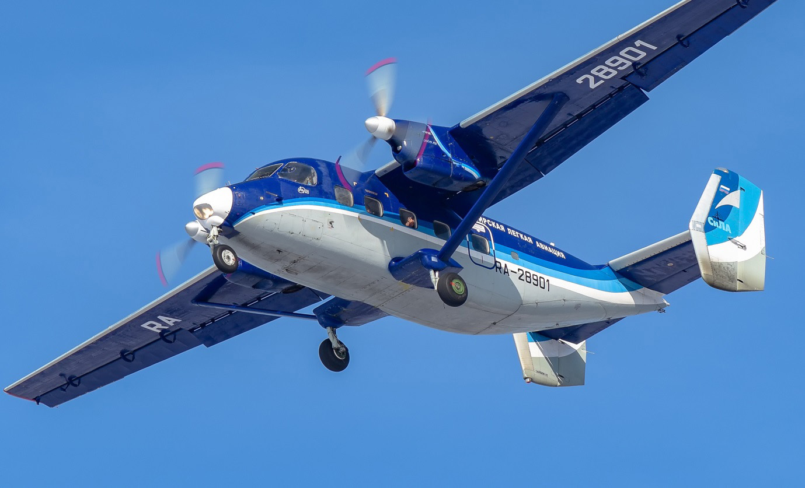
An-28活跃的地区：
- 马加丹 Magadan
- 瑟苏曼 Susuman
- 奥姆苏克昌 Omsukchan
- 赛姆昌 Seymchan
排班可以在航司官网马加丹方向的页面查找：https://sila-avia.ru/for-passengers/popular-destinations/napravlenie-mag/
安东诺夫Ан-38（An-38）
- 安-38是安-28的加长升级版本，换装了功率更大的涡桨发动机以及更现代化的航电设备。
- 载客量提升到了27人，且保留了安-28优异的短距起降（STOL）能力和后部货舱门设计，机身显得更加修长。
- 由于生不逢时，安-38的实际产量极少，目前全球还在执行定期客运航班的安-38可以用屈指可数来形容，属于可遇不可求的“稀稀缺”机型。
埃罗莎矿业航空（Alrosa Airlines）
购票平台：俄罗斯本地OTA，航司官网
除了前文提到的安-24，埃罗莎矿业航空还保留了极少数还在服役的安-38。这种产量极低的小飞机通常被用来执行米尔内大本营到周边偏远矿区和小型定居点的短途支线。想要体验这种机型往往需要极大的运气并密切关注排班。本人在还未定班的时候焦急体验，还以为马上要没了，结果现在定班了显得我有点小丑🤡
| 乘坐体验 | 排班密度 | 性价比 | 稳定程度 |
|---|---|---|---|
| 🌟🌟🌟 | 🌟🌟 | 🌟🌟🌟🌟 | 🌟🌟🌟🌟 |

An-38活跃的地区：
- 米尔内 Mirny
- 极地镇（波利亚尔内）Polyarny
- 雅库茨克（仅部分季节）
排班参考及购票可尝试在官网留意部分短途航班：https://booking.aero.alrosa.ru/websky/#/schedule
目前An-38在MJZ-PYJ为定期航班，可以放心购买。
安东诺夫Ан-2（An-2）
- 安-2（北约代号：Colt，意为“小马”），是世界上最著名的单发双翼多用途运输机之一，自1947年首飞至今仍在广袤的俄罗斯大地上服役。
- 拥有极为逆天的超短距起降能力（在强逆风下甚至能在空中“相对悬停”或“倒飞”），常年用于没有铺装跑道的林区、雪原等偏远村落的日常通勤。
- 飞行速度非常慢（巡航速度在190km/h左右），且客舱没有增压和隔音设备。乘坐体验基本等同于“坐在拖拉机里飞上天”，极其硬核但也是最纯粹的低空飞行体验。
第二阿尔汉格尔斯克股份公司（2nd Arkhangelsk United Aviation Division）
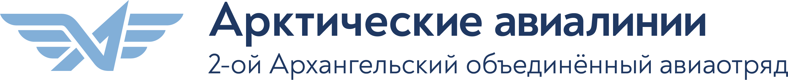
购票平台：线下机场售票处，航司官网
这是俄罗斯目前为数不多依然把安-2保留在定期客运航班网络中的航司。大本营在阿尔汉格尔斯克（瓦西科沃机场 Vaskovo），这家航司专注于白海沿岸及苔原深处的地区级交通。当地很多与外界隔离的小村落至今仍依赖这种“空中公交车”来维持生存补给。想要体验最原生态的安-2客运，来这里是绝佳的选择。
| 乘坐体验 | 排班密度 | 性价比 | 稳定程度 |
|---|---|---|---|
| 🌟 | 🌟🌟🌟 | 🌟🌟🌟🌟 | 🌟🌟🌟 |

An-2活跃的地区：
- 阿尔汉格尔斯克（瓦西科沃机场 / Vaskovo）辐射至白海沿岸及周边的各个偏僻定居点，例如：洛普申加 (Лопшеньга) 、雷特尼亚亚·佐洛季察 (Летняя Золотица) 等。
航班及时刻表可以在其航司官网相关页面进行查询：https://2aoao.ru/schedule.php
补充说明： 前文提到的极地航空（Polar Airlines）虽然机队中同样保有数量可观的An-2/An-3并在雅库特地区深处穿梭，但他们家的An-2目前没有定期客运航班，主要仅用于货运、医疗救护或内部包机。普通游客很难有机会购买到极地航空的An-2机票。
图波列夫Ту-204/214（Tu-204/214）
- 图-204/214是苏联时代末期由图波列夫设计局研发的双发窄体干线客机，旨在替代老旧的图-154三发客机，其定位和外形均与波音757非常相似。
- 客舱布局和乘坐体验已经非常接近现代西方主流窄体客机（如A320和737系列），噪音控制和客舱增压都有显著提升，不再是“硬核”的复古风，反而带着几分现代干线客机的从容。
- 图-214主要是图-204的衍生升级型号（主要由喀山飞机制造厂生产，起飞重量更大，至于为什么叫一个新的型号，这是因为喀山厂具备一定的自主设计的能力，214相比204有较大修改）。在如今的大环境和制裁背景下，俄罗斯重新启动了该机型的复飞与生产计划。
红翼航空（Red Wings Airlines / WZ）

购票平台：国际OTA、俄罗斯本地OTA、航司官网
红翼航空曾经是Tu-204系列在全球最大的运营商之一，后来引进更为经济的机型后一度将其封存。如今，红翼航空又把它们从机库里拖出来擦新复飞（甚至是OAK原厂涂装）。作为一家颇具规模的正规航司，他们的购票流程极其丝滑，航班服务也相对规范且现代化。如果想体验俄罗斯较新一代的大型干线国产客机，红翼的Tu-204/214绝对是最佳选择。
| 乘坐体验 | 排班密度 | 性价比 | 稳定程度 |
|---|---|---|---|
| 🌟🌟🌟🌟 | 🌟🌟🌟🌟 | 🌟🌟🌟🌟 | 🌟🌟🌟 |
Tu-204/214活跃的地区：
- 莫斯科（茹科夫斯基 ZIA、多莫杰多沃 DME 等）出发前往特拉维夫、巴统等地的国际航班（Tu-204常被用来飞这些稍微有距离的国际线）。
- 莫斯科辐射至索契、叶卡捷琳堡等国内主干线。
（由于主干线航班运力调配较频繁，建议购票前在红翼官网或OTA上留意具体航班的机型标识是否为 Tu-204 或 Tu-214）
举例来说：
- 莫斯科ZIA-萨兰斯克
 - 莫斯科DME-巴统
- 莫斯科DME-巴统
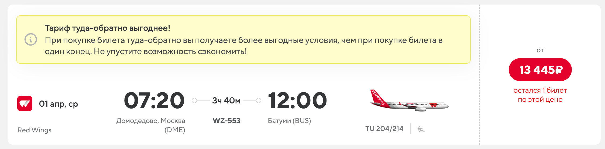
苏霍伊超级喷气100（Sukhoi Superjet 100 / SSJ100-95）
- SSJ100是俄罗斯第一款按西方适航标准设计并量产的现代化支线客机，如今在俄罗斯国内支线航网中挑起了绝对大梁。
- 乘坐体验与常见的E190/A220等现代支线客机几乎没有区别，采用2-3的座椅布局，客舱宽敞舒适，噪音控制十分现代。
- 由于该机型近年来在俄罗斯国内保有量巨大，航线几乎覆盖了俄罗斯各大中小城市，因此想体验的话非常容易买到机票，遇到它的概率极高。
目前大量运营SSJ100-95的主流航司包括（但不限于）：
- 俄罗斯国家航空（Rossiya Airlines / FV）：俄航（Aeroflot）旗下，是目前SSJ100最大的运营商，机队极其庞大。
- 亚马尔航空（Yamal Airlines / YC）：大本营在萨列哈尔德（Salekhard）和秋明，机队主力几乎全部为SSJ100。
- 方位角航空（Azimuth Airlines / Азимут / A4）：全SSJ100机队运营的大型支线航司，涂装非常漂亮，航线网络覆盖面极广。
- 雅库特航空（Yakutia Airlines / R3）：除了波音/常春藤外，也是SSJ100在远东和西伯利亚地区的老牌用户。
- 伊尔库茨克航空（IrAero / IO）：前文提到过，除了An-24，他们的现代化喷气支线主力全靠SSJ。
- 俄罗斯天然气工业航空（Gazpromavia / Gasprom航空 / 4G）：隶属俄气，除了服务于企业与重工业通勤包机外，也有部分的定期客运航班由SSJ执飞。
米里Ми-8直升机（Mi-8 / 包括其衍生型号Mi-17/171等）
- 米-8（北约代号：Hip，意为“河马”），是世界上产量最大、应用最广泛的直升机之一。从极寒的西伯利亚苔原到炎热的荒漠都有它的身影，是极其可靠的多用途空中“皮卡”。
- 乘坐体验突出一个“震耳欲聋”——噪音极大，机舱内常常充满了浓烈的航油味儿。客舱多数未经过精细装修，直接坐成两排面对面的长条板凳，甚至和货物混装。
- 特别说明： 尽管米-8及其衍生型在俄罗斯的保有量大得惊人，但它们绝大多数被用于通用航空、工业包机（油气田通勤等）、救援或货运。能够作为定期客运航班（定班）且对外公开售票的班次其实非常少，有些地方甚至只在冰雪封路的冬季才会临时开启直升机客运。如果航迷们很想体验，通常需要极大的耐心自行搜索或求助于当地旅行社。（米-2直升机也同理，基本只有旅行社来买）
埃罗莎矿业航空（Alrosa Airlines）
购票平台：俄罗斯本地OTA，航司官网
是的，又是这家财大气粗的矿业航司。除了前文提到的安-24和极为罕见的安-38，他们甚至还经营着米-8（其实更多的是米-17）的定期客运航班，同样用于米尔内大本营周边更偏远、连小跑道都没有的矿区或定居点之间的接驳。
| 乘坐体验 | 排班密度 | 性价比 | 稳定程度 |
|---|---|---|---|
| 🌟 | 🌟🌟 | 🌟🌟 | 🌟🌟🌟 |
Mi-8活跃的地区：
- 米尔内（Mirny）至周边村落或矿区（季节和排班极其不稳定，需密切关注官网）。排班参考可前往其官网查询：https://booking.aero.alrosa.ru/websky/#/schedule
- 米尔内-极地村
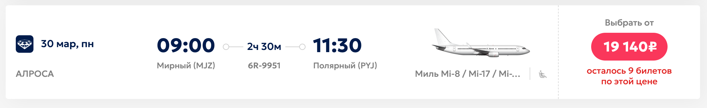
泰加航空（Taiga / Тайга）
购票平台：航司官网客运页面
这是一家在大萨哈林岛（库页岛）和千岛群岛上运营的通航公司。在这个受制于地理与气候隔绝的岛屿群中，直升机往往是唯一的空中客运生命线。这家航司提供相对固定班次的Mi-8（以及DHC-6）客运航班，飞跃鄂霍次克海和千岛群岛，沿途不仅硬核而且风景极度震撼。
如果你从哈尔滨走晖春口岸到俄罗斯，可以坐口岸边上该航司运营的定期航班飞到伯力，特别便宜。
| 乘坐体验 | 排班密度 | 性价比 | 稳定程度 |
|---|---|---|---|
| 🌟 | 🌟🌟🌟🌟 | 🌟🌟🌟 | 🌟🌟🌟🌟 |
Mi-8活跃的地区：
- 萨哈林州（ Южно-Сахалинск / 尤日诺-萨哈林斯克起飞）辐射至择捉岛（Итуруп）、色丹岛（Шикотан）等千岛群岛定居点。
具体航班及定期客运时刻表详见：https://www.taiga.aero/passazhiram/raspisanie/
其他俄制飞机
目前飞到俄罗斯本土并且能坐到的更古早俄制飞机只有朝鲜高丽航空运营，包括：Tu-154b/b2、Il-62M、Tu-134b3、An-148、Tu-204/214、Il-18D
以上所有飞机本人均在FNJ-VVO航线观测到过（J网图片、R网图片、本人亲自拍摄等来源，近一年内均多次出现），说起来朝鲜人是真的喜欢俄罗斯啊。
至于如何乘坐，你得先考虑一下如何从俄罗斯进入朝鲜了……
后记
错过了2008金融危机前的俄罗斯航空业，你绝对不能再错过俄罗斯航空业2026大变之前的俄罗斯民航了，保证个人安全抓紧出发吧！